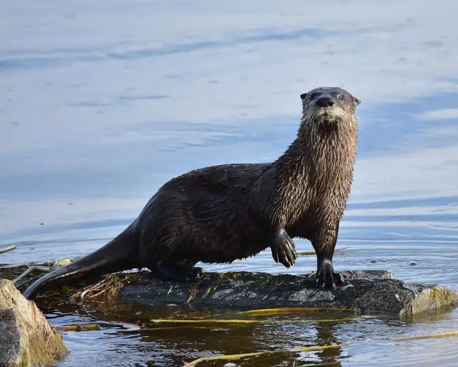
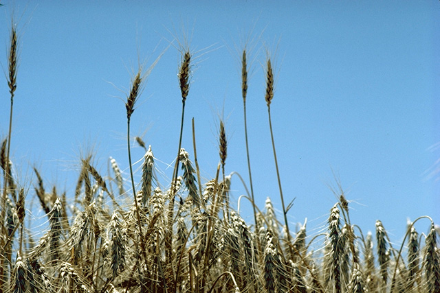

El Parque Nacional Isla Pingüino, en Santa Cruz, Argentina, es conocido por sus colonias de pingüinos de Magallanes y diversas aves marinas, como cormoranes y gaviotas. También alberga leones marinos, zorros grises y nutrias de río.
La conservación del parque es vital para proteger esta biodiversidad, amenazada por la actividad humana, y ofrece a los visitantes la oportunidad de disfrutar de la belleza natural de la Patagonia.


El Parque Nacional Isla Pingüino, en Santa Cruz, Argentina, es un área protegida con flora adaptada a condiciones severas.
Predominan matorrales como el calafate y el coirón, así como gramíneas y cactáceas que ayudan a conservar el suelo. Esta vegetación no solo es vital para la biodiversidad, sino que también sustenta la fauna local, incluidas las colonias de pingüinos de Magallanes, formando un ecosistema que merece ser protegido.
Leon marino y Nutria de rio

- 
Zorro gris y Pinguino de penacho

Coiron y

- 